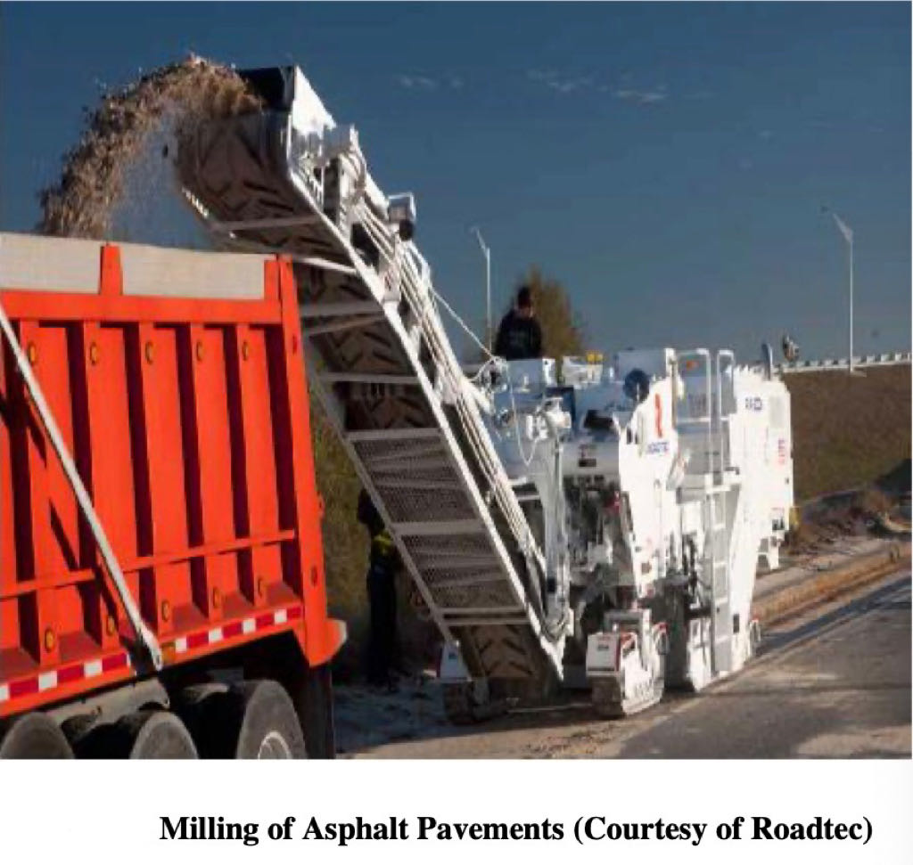
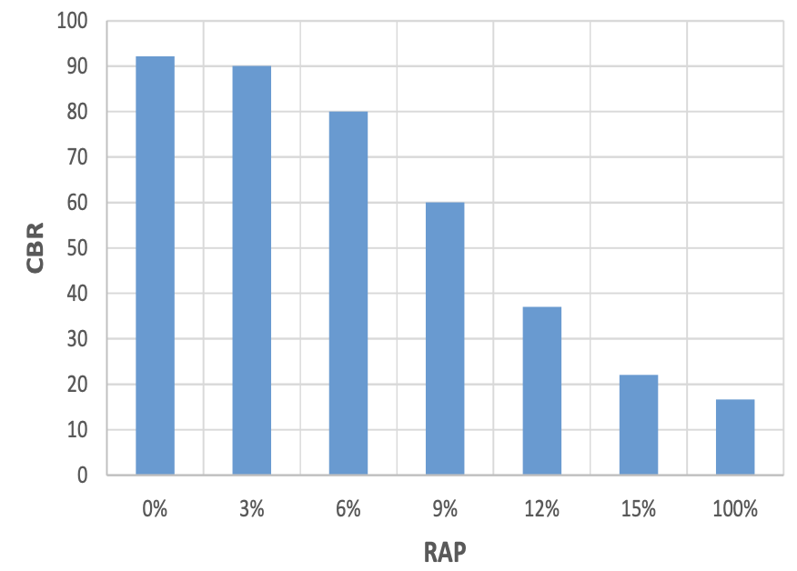
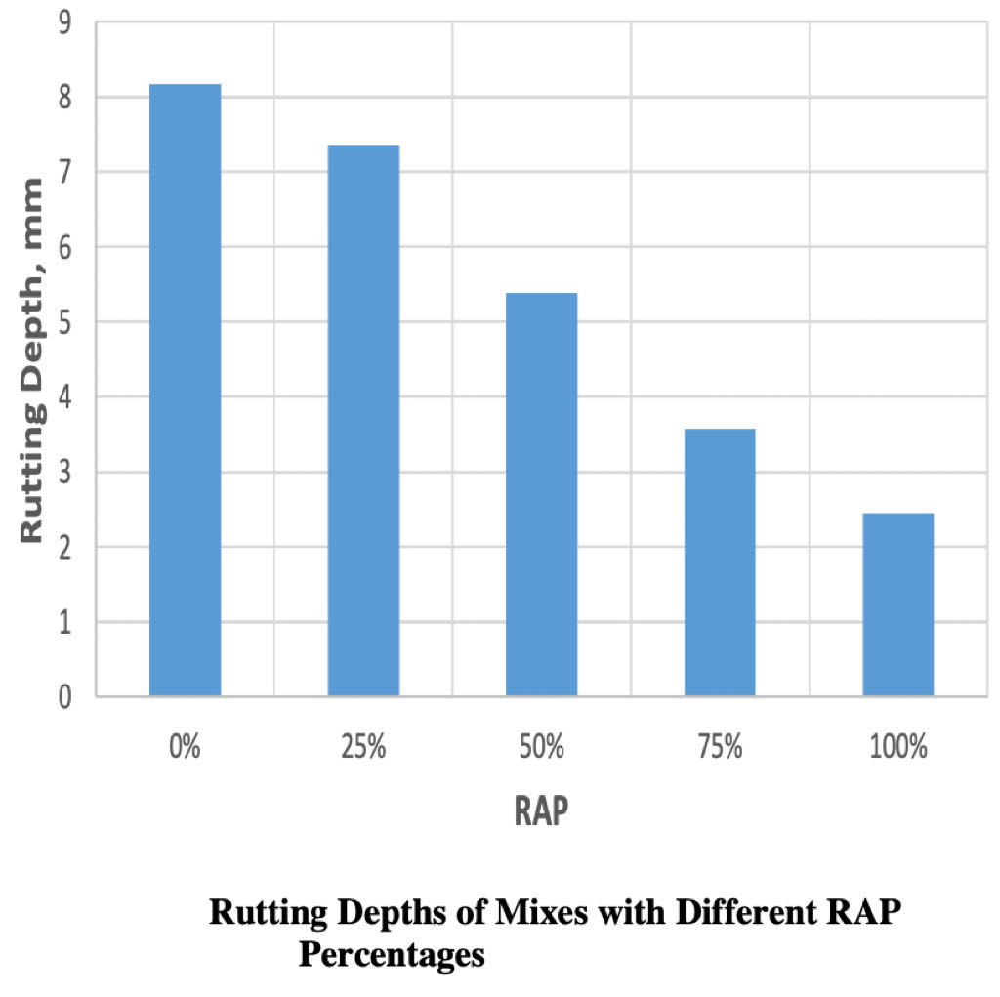
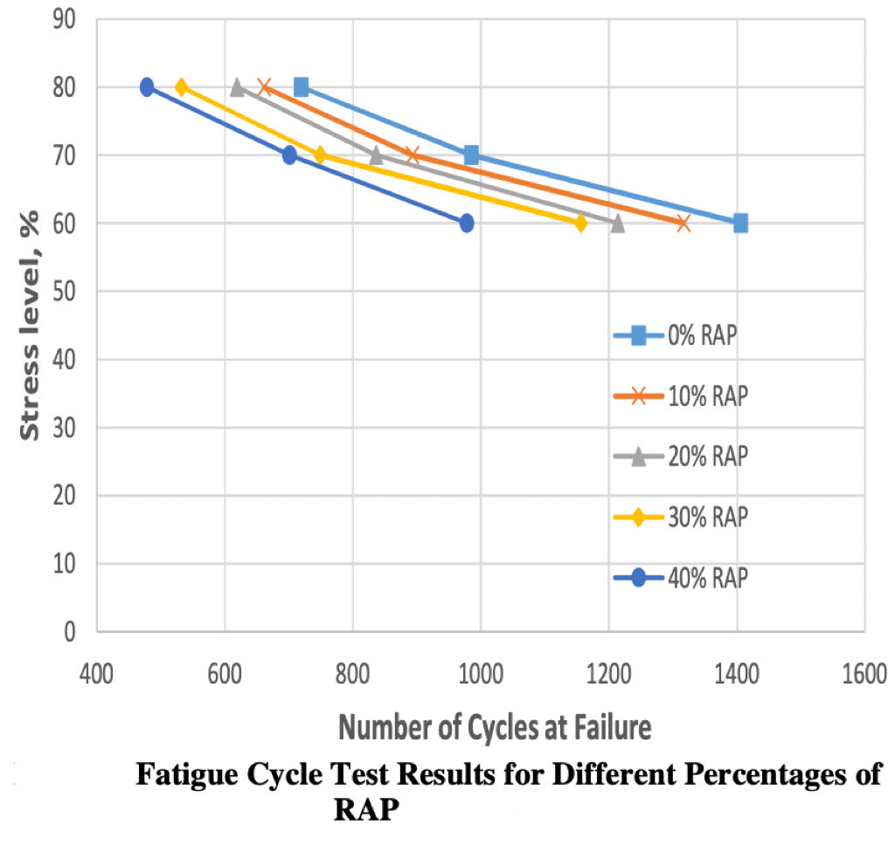
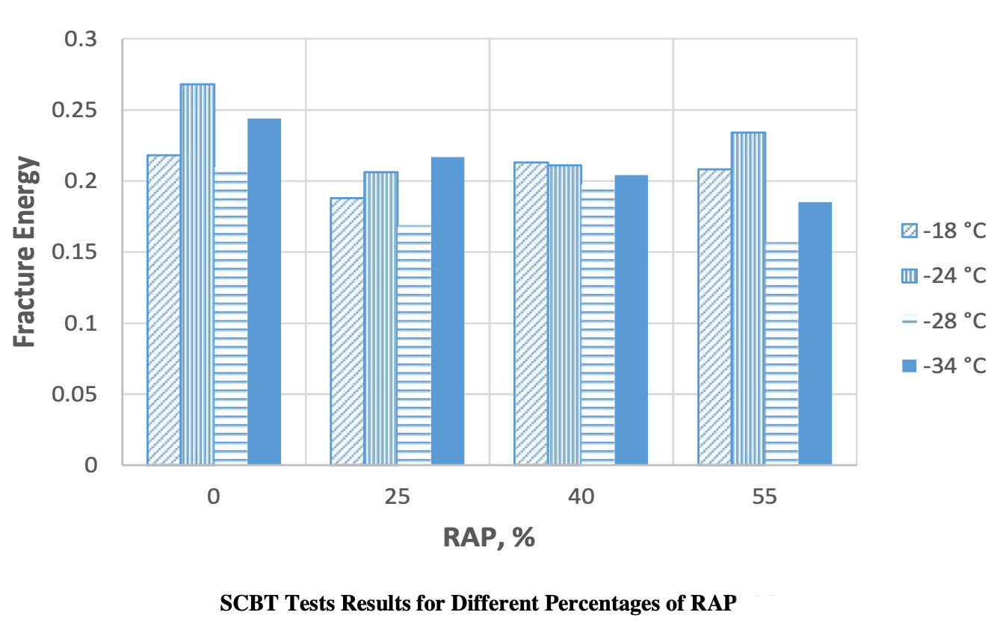

Utilizing Reclaimed Asphalt Pavement Materials in New Pavements
Recently, prices of asphalt pavement materials have been increasing tremendously, which led to attempts to find alternative cheap materials. In addition, more concerns are directed to reserving natural resources and reducing environmental impacts of using virgin asphalt binders, thus more attention is focused on the use of recycled materials in pavement designs. Transportation agencies worldwide are incorporating reclaimed asphalt pavement (RAP) materials in new pavement designs. The main concern of combining RAP in new asphalt mixes is how it will affect the resistance of these mixes to permanent deformation (rutting), fatigue cracks, and thermal cracks, which are the main distresses that affect the performance of asphalt mixes. Recently, the Department of Public Works and Services at United States started adopting RAP mixes in ongoing projects (e.g., Kadra-Shawka Road) with no clear guidelines, in hope of reducing costs and that these roads would have better performance.
Introduction
Due to heavy traffic loads and environmental conditions that are not considered in the design of asphalt pavements, more and more asphalt pavements are failing prematurely, as a result overlaying or replacing failing pavements become a necessity. Overlaying a pavement is a simple process, where a new asphalt layer is added, the problem with overlaying is the nature of the asphalt mix materials, which will take the form of the lower layer and most distress will be reflected on it after opening road for traffic. The best solution is to mill the surface of the old pavement to remove the affected part of the pavement, then the question is what to do with the removed materials, either dump it in landfill or reuse it as construction materials, hence the use of reclaimed asphalt pavement (RAP) came into the picture with a promise of many economic and environmental benefits. Currently, almost all RAP is recycled back into pavements, for example it is estimated that a 30,000 ton pile of RAP with an average 6% liquid asphalt binder content is the equivalent of about 28,200 tons of clean aggregate plus 10,000 Barrels of liquid asphalt, which could replace virgin materials. The most recycled materials in the United States is asphalt pavement materials. Over 80% of asphalt pavement materials milled from roadways is reused. It can be mixed into new pavement or used as a subbase or fill material. In 2012, American asphalt plants used an estimated 68.3 million tons of reclaimed asphalt pavement to produce new asphalt. RAP was first used in 1973 with 3% allowed to replace virgin materials in an asphalt mix, and since then and due to the increase of cost of asphalt binder, higher percentages were allowed, reaching nowadays 20 to 30% and even 50%. The asphalt industry is considered number-one recycler and in 2012 almost all (98%) contractors in the United States reported using RAP with estimated savings of $2.04 billion at $600 per ton for asphalt binder. Even though, using RAP proves to have economic and environmental advantages, it is still unclear the level of interaction between RAP and virgin asphalt mixes, and it is essential to evaluate the effects of RAP on the performance of asphalt pavements before implementing and allowing such high percentages in new asphalt pavements.
 Reclaimed Asphalt Pavement Materials in Pavement Base or Subbase Layers
Since most agencies do not allow high percentages of RAP in surface layer (hot mix asphalt) and to avoid issues with storage of RAP for an extended period of time, many studies were conducted on the use of RAP as a stabilization material in pavement Base and/or Subbase layers. Hoppe et al. investigated the use of RAP for road base and subbase applications. Their study showed that the usage of RAP in road base and subbase materials was feasible and no major environmental concerns appeared to be related to using unbound RAP without chemical stabilization agents. Furthermore, a study by Locander found that using RAP as an unbound aggregate base course was a suitable alternative approach, where the stiffness strength properties tests showed the RAP had stiffness strength higher than an unbound traditional used base and had a slightly higher permeability. McGarrah argued that when the RAP percentage increased over 50%, the properties of the blend could have severe effects. Further evaluation should be conducted to better determine a maximum percentage of RAP, and it was better to maintain RAP percentage at 35% for base and sub base applications. Ansori and Radam reported a huge drop in California Bearing Ratio (CBR) Test with the increase of RAP. CBR is the main design criterion when designing base and sub base layer thicknesses, and based on their findings, RAP could be used with no more than 3% for base courses, 9% for subbase courses, and 10% courses without asphalt coverings or shoulder.
Reclaimed Asphalt Pavement Materials in Pavement Surface Layer
The most use of RAP is in hot asphalt mix. It involves mixing RAP with new or “virgin” aggregates, neat asphalt binder, and/or recycling agents in a central hot mix plant to produce a recycled mix. The percentage of RAP permitted in a recycled mix varies by agency as well as guidelines as to where the recycled mix can be used in the pavement structure. Some agencies allow 15% or less RAP while others permit larger amounts of RAP. Higher RAP percentages require modifications in mix design and binder selection. Suggested guidelines relative to RAP content in a recycled mix are as follows: 15% RAP or less: binder grade is the same as that used in a virgin mix; 15-25% RAP: binder grade should be one grade lower on both high and low temperature end, i.e. PG 58- 22 rather than PG 64-16; higher than 25% RAP: perform tests to determine the percentage of RAP and ensure the quality of the blend.
RAP is mixed with aggregate and asphalt binder to yield a recycled mix and there are different ways to complete the process and it is governed by the configuration of the hot mix plant. RAP is added directly to the mixer in a drum mix plant (Figures 4-a, 4-b, and 4-c). The inlet at which RAP is added to the drum mixer relies on the mixer type (parallel flow versus counter flow versus double barrel) and whether or not a separate coater is included in the drum mix operation. Once the recycled mix has been produced, it is either delivered to the construction site to be placed and compacted or stored in silos for future delivery. No special techniques are needed to handle recycled mix. However, special care and consideration should be employed when compaction of the recycled mix, since the recycled mix temperature will be slightly lower than the conventional mix, to avoid overheating the mix at the plant.
Performance of Asphalt Mixes with Reclaimed Asphalt Pavement Materials
The main question that many studies tried to answer is how the addition of RAP to virgin mixes affect their performance. Will the combined mix perform better, the same, or less than without RAP? What is the optimum amount of RAP to be added? RAP is essentially aged asphalt mix, which is stiffer and less ductile, giving the combined mix more strength but less flexibility, which may cause cracks to appear quicker than a conventional mix. Many agencies experimented with different percentages of RAP in hope to answer the above mentioned questions.
A study on Michigan and the Missouri samples showed that mixes containing RAP had similar stiffness to virgin mixes. However, results of the shear tester demonstrated the stiffening effect of RAP materials on the mix properties. The increased stiffness may improve permanent deformation (rutting) resistance of the combined mix but it could increase the potential for fatigue and thermal cracking.
Summary and Recommendations
With the increase of costs of pavement materials and calls to reserve natural resources, more agencies are incorporating reclaimed asphalt pavement materials (RAP) in new pavement designs. This process has been used decades ago, but with lower contents. Nowadays, higher percentages (e.g. >50%) are being adopted to save money and natural resources.
Permanent deformation (rutting), fatigue cracks, and thermal cracks are the main distresses that affect the performance of asphalt mixes. Many studies had been conducted to evaluate the effect of RAP on the performance of asphalt pavements and showed that RAP increases the stiffness of asphalt mixes, due to the aged asphalt binder. Resulting in an improvement of rutting resistance and better performance at high temperature. On the other hand, results were not consistent when it came to fatigue and thermal cracking. Few studies argued that there were no effects of RAP on these distresses, where other studies showed a reduction in fatigue and thermal cracking resistance leading to a poor performance of these mixes.
Recently, the Department of Public Works and Services at Ras Al Khaimah started adopting RAP mixes in ongoing projects (Kadra-Shawka Road) with no clear guidelines. Due to the hot weather conditions in Ras Al Khaimah, it is speculated that these roads would perform better than traditionally built roads. However, fatigue cracking, which might be a big concern is not addressed. It is recommended that before implementing such project to conduct a methodological experimental program to evaluate local materials, develop guidelines for use of RAP, and most importantly to pinpoint the correct RAP percentage for such projects in Ras Al Khaimah. Thus, this study was initiated. In the meantime, RAP usage should be limited to base and subbase layers.
  